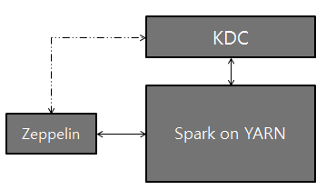

Spark Interpreter for Apache Zeppelin
Overview
Apache Spark is a fast and general-purpose cluster computing system. It provides high-level APIs in Java, Scala, Python and R, and an optimized engine that supports general execution graphs Apache Spark is supported in Zeppelin with Spark Interpreter group, which consists of five interpreters.
| Name | Class | Description |
|---|---|---|
| %spark | SparkInterpreter | Creates a SparkContext and provides a scala environment |
| %pyspark | PySparkInterpreter | Provides a python environment |
| %r | SparkRInterpreter | Provides an R environment with SparkR support |
| %sql | SparkSQLInterpreter | Provides a SQL environment |
| %dep | DepInterpreter | Dependency loader |
Configuration
The Spark interpreter can be configured with properties provided by Zeppelin. You can also set other Spark properties which are not listed in the table. For a list of additional properties, refer to Spark Available Properties.
| Property | Default | Description |
|---|---|---|
| args | Spark commandline args | master | local[*] | Spark master uri. ex) spark://masterhost:7077 |
| spark.app.name | Zeppelin | The name of spark application. |
| spark.cores.max | Total number of cores to use. Empty value uses all available core. |
|
| spark.executor.memory | 512m | Executor memory per worker instance. ex) 512m, 32g |
| zeppelin.dep.additionalRemoteRepository | spark-packages, http://dl.bintray.com/spark-packages/maven, false; |
A list of id,remote-repository-URL,is-snapshot; for each remote repository. |
| zeppelin.dep.localrepo | local-repo | Local repository for dependency loader |
| zeppelin.pyspark.python | python | Python command to run pyspark with |
| zeppelin.spark.concurrentSQL | false | Execute multiple SQL concurrently if set true. |
| zeppelin.spark.maxResult | 1000 | Max number of SparkSQL result to display. |
| zeppelin.spark.printREPLOutput | true | Print REPL output |
| zeppelin.spark.useHiveContext | true | Use HiveContext instead of SQLContext if it is true. |
| zeppelin.spark.importImplicit | true | Import implicits, UDF collection, and sql if set true. |
Without any configuration, Spark interpreter works out of box in local mode. But if you want to connect to your Spark cluster, you'll need to follow below two simple steps.
1. Export SPARK_HOME
In conf/zeppelin-env.sh, export SPARK_HOME environment variable with your Spark installation path.
for example
export SPARK_HOME=/usr/lib/spark
You can optionally export HADOOP_CONF_DIR and SPARK_SUBMIT_OPTIONS
export HADOOP_CONF_DIR=/usr/lib/hadoop
export SPARK_SUBMIT_OPTIONS="--packages com.databricks:spark-csv_2.10:1.2.0"
For Windows, ensure you have winutils.exe in %HADOOP_HOME%\bin. For more details please see Problems running Hadoop on Windows
2. Set master in Interpreter menu
After start Zeppelin, go to Interpreter menu and edit master property in your Spark interpreter setting. The value may vary depending on your Spark cluster deployment type.
for example,
- local[*] in local mode
- spark://master:7077 in standalone cluster
- yarn-client in Yarn client mode
- mesos://host:5050 in Mesos cluster
That's it. Zeppelin will work with any version of Spark and any deployment type without rebuilding Zeppelin in this way. (Zeppelin 0.5.6-incubating release works up to Spark 1.6.1 )
Note that without exporting
SPARK_HOME, it's running in local mode with included version of Spark. The included version may vary depending on the build profile.
SparkContext, SQLContext, ZeppelinContext
SparkContext, SQLContext, ZeppelinContext are automatically created and exposed as variable names 'sc', 'sqlContext' and 'z', respectively, both in scala and python environments.
Note that scala / python environment shares the same SparkContext, SQLContext, ZeppelinContext instance.
Dependency Management
There are two ways to load external library in spark interpreter. First is using Interpreter setting menu and second is loading Spark properties.
1. Setting Dependencies via Interpreter Setting
Please see Dependency Management for the details.
2. Loading Spark Properties
Once SPARK_HOME is set in conf/zeppelin-env.sh, Zeppelin uses spark-submit as spark interpreter runner. spark-submit supports two ways to load configurations. The first is command line options such as --master and Zeppelin can pass these options to spark-submit by exporting SPARK_SUBMIT_OPTIONS in conf/zeppelin-env.sh. Second is reading configuration options from SPARK_HOME/conf/spark-defaults.conf. Spark properites that user can set to distribute libraries are:
| spark-defaults.conf | SPARK_SUBMIT_OPTIONS | Applicable Interpreter | Description |
|---|---|---|---|
| spark.jars | --jars | %spark | Comma-separated list of local jars to include on the driver and executor classpaths. |
| spark.jars.packages | --packages | %spark | Comma-separated list of maven coordinates of jars to include on the driver and executor classpaths. Will search the local maven repo, then maven central and any additional remote repositories given by --repositories. The format for the coordinates should be groupId:artifactId:version. |
| spark.files | --files | %pyspark | Comma-separated list of files to be placed in the working directory of each executor. |
Note that adding jar to pyspark is only availabe via
%depinterpreter at the moment.
Here are few examples:
SPARK_SUBMIT_OPTIONS in conf/zeppelin-env.sh
export SPARKSUBMITOPTIONS="--packages com.databricks:spark-csv_2.10:1.2.0 --jars /path/mylib1.jar,/path/mylib2.jar --files /path/mylib1.py,/path/mylib2.zip,/path/mylib3.egg"
SPARK_HOME/conf/spark-defaults.conf
spark.jars /path/mylib1.jar,/path/mylib2.jar spark.jars.packages com.databricks:spark-csv_2.10:1.2.0 spark.files /path/mylib1.py,/path/mylib2.egg,/path/mylib3.zip
3. Dynamic Dependency Loading via %dep interpreter
Note:
%depinterpreter is deprecated since v0.6.0.%depinterpreter load libraries to%sparkand%pysparkbut not to%spark.sqlinterpreter so we recommend you to use first option instead.
When your code requires external library, instead of doing download/copy/restart Zeppelin, you can easily do following jobs using %dep interpreter.
- Load libraries recursively from Maven repository
- Load libraries from local filesystem
- Add additional maven repository
- Automatically add libraries to SparkCluster (You can turn off)
Dep interpreter leverages scala environment. So you can write any Scala code here.
Note that %dep interpreter should be used before %spark, %pyspark, %sql.
Here's usages.
%dep
z.reset() // clean up previously added artifact and repository
// add maven repository
z.addRepo("RepoName").url("RepoURL")
// add maven snapshot repository
z.addRepo("RepoName").url("RepoURL").snapshot()
// add credentials for private maven repository
z.addRepo("RepoName").url("RepoURL").username("username").password("password")
// add artifact from filesystem
z.load("/path/to.jar")
// add artifact from maven repository, with no dependency
z.load("groupId:artifactId:version").excludeAll()
// add artifact recursively
z.load("groupId:artifactId:version")
// add artifact recursively except comma separated GroupID:ArtifactId list
z.load("groupId:artifactId:version").exclude("groupId:artifactId,groupId:artifactId, ...")
// exclude with pattern
z.load("groupId:artifactId:version").exclude(*)
z.load("groupId:artifactId:version").exclude("groupId:artifactId:*")
z.load("groupId:artifactId:version").exclude("groupId:*")
// local() skips adding artifact to spark clusters (skipping sc.addJar())
z.load("groupId:artifactId:version").local()
ZeppelinContext
Zeppelin automatically injects ZeppelinContext as variable 'z' in your scala/python environment. ZeppelinContext provides some additional functions and utility.
Object Exchange
ZeppelinContext extends map and it's shared between scala, python environment. So you can put some object from scala and read it from python, vise versa.
// Put object from scala
%spark
val myObject = ...
z.put("objName", myObject)
# Get object from python
%pyspark
myObject = z.get("objName")
Form Creation
ZeppelinContext provides functions for creating forms. In scala and python environments, you can create forms programmatically.
%spark
/* Create text input form */
z.input("formName")
/* Create text input form with default value */
z.input("formName", "defaultValue")
/* Create select form */
z.select("formName", Seq(("option1", "option1DisplayName"),
("option2", "option2DisplayName")))
/* Create select form with default value*/
z.select("formName", "option1", Seq(("option1", "option1DisplayName"),
("option2", "option2DisplayName")))
%pyspark
# Create text input form
z.input("formName")
# Create text input form with default value
z.input("formName", "defaultValue")
# Create select form
z.select("formName", [("option1", "option1DisplayName"),
("option2", "option2DisplayName")])
# Create select form with default value
z.select("formName", [("option1", "option1DisplayName"),
("option2", "option2DisplayName")], "option1")
In sql environment, you can create form in simple template.
%sql
select * from ${table=defaultTableName} where text like '%${search}%'
To learn more about dynamic form, checkout Dynamic Form.
Interpreter setting option
Interpreter setting can choose one of 'shared', 'scoped', 'isolated' option. Spark interpreter creates separate scala compiler per each notebook but share a single SparkContext in 'scoped' mode (experimental). It creates separate SparkContext per each notebook in 'isolated' mode.
Setting up Zeppelin with Kerberos
Logical setup with Zeppelin, Kerberos Key Distribution Center (KDC), and Spark on YARN:

Configuration Setup
On the server that Zeppelin is installed, install Kerberos client modules and configuration, krb5.conf. This is to make the server communicate with KDC.
Set SPARK_HOME in
[ZEPPELIN\_HOME]/conf/zeppelin-env.shto use spark-submit (Additionally, you might have to setexport HADOOP\_CONF\_DIR=/etc/hadoop/conf)Add the two properties below to spark configuration (
[SPARK_HOME]/conf/spark-defaults.conf):spark.yarn.principal spark.yarn.keytabNOTE: If you do not have access to the above spark-defaults.conf file, optionally, you may add the lines to the Spark Interpreter through the Interpreter tab in the Zeppelin UI.
That's it. Play with Zeppelin!